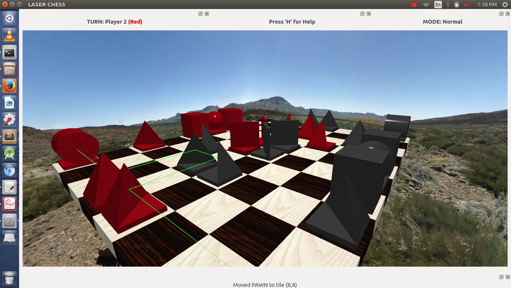
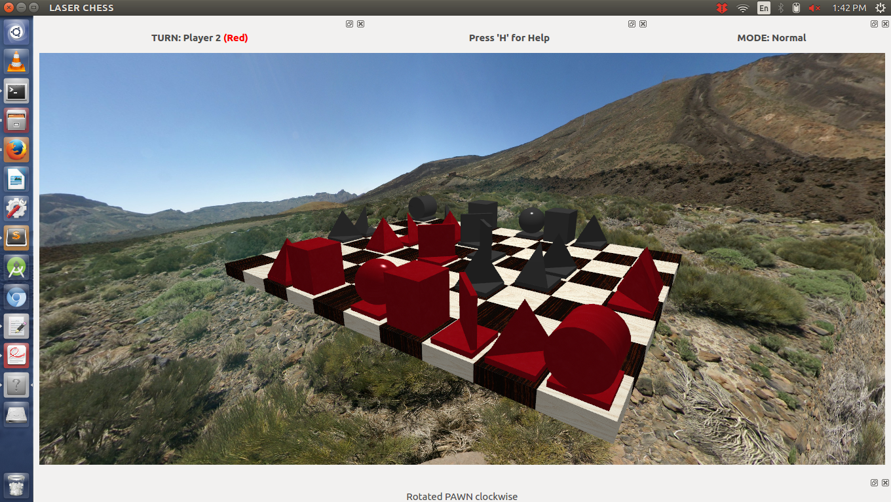
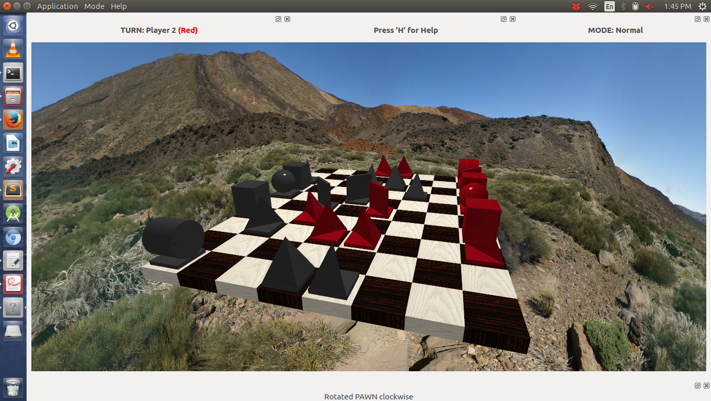
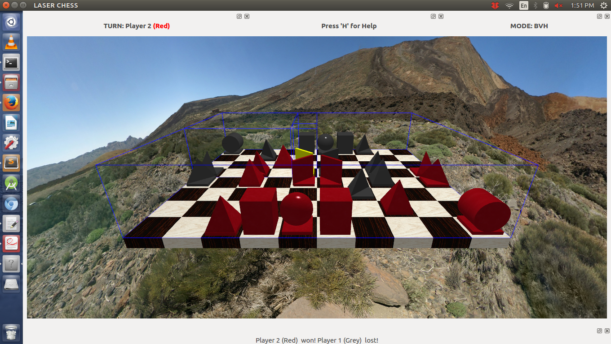
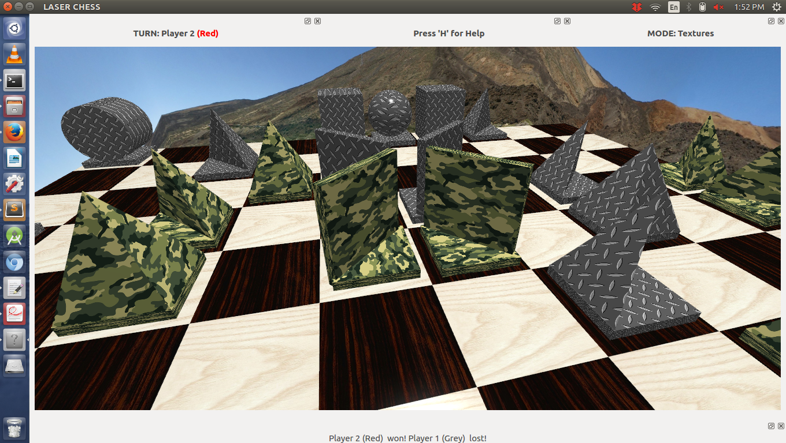
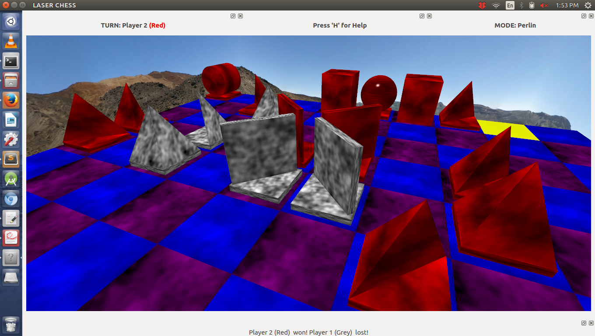
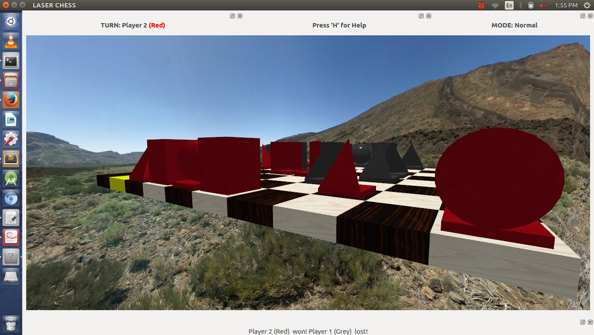

This is page showcases the final project I developed for credit in computer graphics class (CS 488, Spring 2015) at the University of Waterloo. My project is a two-player laser chess game, inspired by Khet. I wrote my game for Linux using OpenGL, Qt, and SDL in less than two weeks at the end of term. The source code is available on my GitHub here. I am hoping to continue development and add more enhancements as I continue to expand my knowledge of OpenGL, Qt, and computer graphics techniques.
If you want to see the game in action, click here to scroll to the screencast at the bottom of the page
The goal of the game is to move your reflective pieces so you can 'zap' your opponent's king piece with a laser beam. Players take turns, during with they can move one of their pieces one square left, right, up, or down, or rotate one of their pieces clockwise or counter-clockwise by 90 degrees. After moving a piece, the player must activate their laser to finish their turn. The laser beam bounces off of the reflective surfaces of pieces, and eliminates a piece when it hits a non-reflective surface.
Each piece has different abilities:
The game play flows as follows:
The game controls are:
The user can also these toggle modes and help prompts:
I specified 10 objectives to fulfill for my project, of which I completed 8.
I modelled the scene using a variety of primitives I implemented myself. I added rotation and translation to game pieves, and implemented the camera transformations to view the scene from different angles and distances.
The user can move game pieces using keys and change the camera view using the mouse. Modes and help prompts can be toggled by shortcut keys and menu entries. I also added several status labels informing the user of which player's turn it is, which mode is active, and whether or not the last move was successful.
I implemented a bounding volume hierarchy (BVH) tree for the game pieces in my scene. The board is recursively divided into quadrants in the plane of the game board until each volume is a unit cube containing only a single piece. I added a mode to show off the effect of traversing the BVH tree to find a piece, which illustrates the nesting of the bounded volumes.
I implemented texture mapping by loading textures to a sampler in the fragment shader and applying the texture to modelling primitives using 2D texture coordinates I generated.
I implemented classic Perlin noise using linear interpolation and varying octaves and persistence levels to generate unique textures for my scene. I varied the number of times random noise was applied and the noisiness of the signal to create different levels of smoothness and consistency in my textures.
I was unable to complete this objective due to time constraints.
I generated a skybox by surrounding the scene in a giant cube with a tiles of a panoramic image mapped to the cube faces. I used clamping, inverted texture coordinates, and a special camera transformation matrix to ensure the skybox was rendered smoothly without seams and did not warp with viewing transformations.
I implemented keyframe animation using linear interpolation for the movement of all the game pieces. Game piece rotation and translation are animated with synchronized sound. The laser activation also triggers a zapping sound, and when a piece is hit by the laser an explosion sound happens.
Watch the screen cast below to see the animation and sound in action.
I was unable to complete this objective due to time constraints.
I added a couple of extra enhancements to my project.
I implemented a Phong lighting model using specular, diffuse, and ambient radiance to illuminate the scene. You can see the glossiness and sheen of the pieces in the screenshots above.
The game engine I implemented is quite solid, allowing for effective and bug-free game play. When pieces are moved or eliminated, the laser path is recalculated and updated for rendering the laser. I also implemented game logic that prevents users from making invalid moves: can't move pieces off the board, move pieces that aren't theres, or do moves pieces aren't allowed to do.
Overall this project was an excellent way to demonstrate my knowledge of computer graphics and to learn more about OpenGL and Qt. I applied my knowledge of modelling and the graphics pipeline to render the scene, defined a lighting model, implemented a BVH tree, added 2D solid texture mapping, and generated textures using Perlin noise. I look forward to extending this project and applying my new knowledge to future projects in computer graphics.